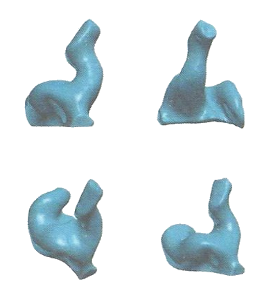
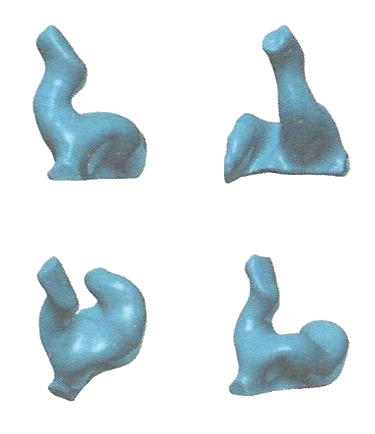

| 주문서 발송일 | |||
| 출고요청 일자 | |||
| 업체명 | 새봄보청기(수원) | ||
| 고객명 | 연락처 | ||
| 제품명 | Serial No. | ||
| 배송수단 | 택배퀵서비스고속/KTX ※택배를 제외한 다른 배송수단은 유상 배송입니다. | ||
| Repair | 소리 안남소리 왜곡간헐적 작동소리 약함소리 울림페어링/연결잡음내부 피드백배터리 소모량 많음손잡이버핑애딩배터리 도어 문제쉘/플레이트 분리프로그램 오류쉘 보수청소 점검충전기 작동 불량충전안됨 |
| Remake | 피드백 발생Vent 변경Canal 길이(Long)Canal 길이(Short)파손헐거움빠짐빡빡함착용이 힘듦보청기 사이즈 문제방향 변경옵션 추가/제거쉘 파손으로 인한 재제작 |
| 상세 기입사항 | ※수리비 발생 시 진행 여부 확인 전화 드립니다. | 귀 안/밖 통증 (상세하게 작성해 주시기 바랍니다.) | |
| 왼쪽 | 오른쪽 | ||
 |  | ||
| ※상기 이미지에 통증 및 불편사항을 표시해 주시기 바랍니다. | |||